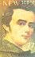
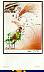
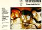
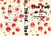
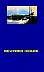
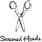

|
|
IKON 1
|
Contents:
VHS: UK 1981 (IKON IKON 1)
BETA: UK 1981 (IKON IKON 1)
6:15 A CERTAIN RATIO - Back to the Start
6:00 SECTION 25 - New Horizon
8:30 NEW ORDER - Everything's Gone Green (live)
5:00 CABARET VOLTAIRE - Sluggin' For Jesus
6:40 DURUTTI COLUMN - Marie Louise Gardens
6:30 CRISPY AMBULANCE - The Presence
4:00 ORCHESTRAL MANOEUVRES IN THE DARK - Electricity (live)
3:35 CABARET VOLTAIRE - No Escape
4:20 NEW ORDER - Truth (live)
Additional Notes:
Equivalent to Factory Benelux FAC BN 7.

|
IKON 2
|
Contents:
VHS: UK 1982 (IKON IKON 2)
BETA: UK 1982 (IKON IKON 2)
?:?? Decades
?:?? Dead Souls
?:?? Love Will Tear Us Apart
?:?? Shadowplay
?:?? Day of the Lords
?:?? Digital
?:?? Colony
?:?? New Dawn Fades
?:?? Auto-Suggestion
?:?? Transmission
?:?? Sound of Music
?:?? She's Lost Control
?:?? Walked in Line
?:?? I Remember Nothing
?:?? Love Will Tear Us Apart *
* Official promo video
Additional Notes:
Equivalent to Factory FACT 37.
Questionable quality live footage, mostly filmed at the Apollo, Manchester [27-28 Oct 79], some from Eindhoven, Netherlands [18 Jan 80].

|
IKON 3
|
Contents:
VHS: UK 1982 (IKON IKON 3) [PAL/NTSC]
BETA: UK 1982 (IKON IKON 3) [PAL/NTSC]
5:57 SECTION 25 - New Horizon
?:?? NEW ORDER - Ceremony *
?:?? A CERTAIN RATIO - Forced Laugh
?:?? ORCHESTRAL MANOEUVRES IN THE DARK - Electricity *
?:?? CABARET VOLTAIRE - No Escape
8:24 DURUTTI COLUMN - The Missing Boy *
?:?? KEVIN HEWICK - Ophelia's Drinking Song
?:?? THE NAMES - Nightshift
?:?? CRISPY AMBULANCE - The Presence
?:?? NEW ORDER - In A Lonely Place *
?:?? STOCKHOLM MONSTERS - Soft Babies
* Live performance.
Additional Notes:
Equivalent to Factory FACT 56.
|  |
IKON 4
|
Contents:
VHS: UK 1983 (IKON IKON 4) [PAL/NTSC]
BETA: UK 1983 (IKON IKON 4) [PAL/NTSC]
2:55 {Opening titles - silent}
4:00 I.C.B. *
3:00 Dreams Never End
4:52 Everything's Gone Green
4:20 Truth
4:33 Senses
3:44 Procession
4:30 Ceremony
4:50 Little Dead **
10:25 Temptation
3:10 {End titles - silent}
* Actually "Chosen Time".
** Actually "Denial".
Additional Notes:
Equivalent to Factory FACT 77.
Ukranian National Home, New York, 11/18/81.

|
IKON 5
|
Contents:
VHS: UK 1983 (IKON IKON 5) [PAL/NTSC]
BETA: UK 1983 (IKON IKON 5) [PAL/NTSC]
2:45 {Hacienda Construction Footage} *
6:37 NEW ORDER - Your Silent Face
3:09 JAMES - Stutter
3:03 STOCKHOLM MONSTERS - Life's Two Faces
4:36 52nd STREET - The Rapp
3:43 A CERTAIN RATIO - Back to the Start
3:08 A CERTAIN RATIO - Showcase
4:05 SWAMP CHILDREN - You've Got Me Beat
4:29 DURUTTI COLUMN - The Beggar
5:17 THE WAKE - Uniform
4:48 SECTION 25 - Warhead
5:47 QUANDO QUANGO - Go Exciting
3:06 {Hacienda Venue Footage} **
* Instrumental primitive of NEW ORDER - 5-8-6 (Prime 5-8-6) used for
intro Hacienda construction footage.
** Instrumental mix of 52nd STREET - Cool As Ice used for outro
Hacienda venue footage.
Additional Notes:
Equivalent to Factory FACT 71.
All tracks live at The Hacienda Club, Manchester.
The packaging says in big numerals "51" / "71", indicating the previous point (see also FAC 51).
|  |
IKON 6
|
Contents:
VHS: UK 1983 (IKON IKON 6) [PAL/NTSC]
BETA: UK 1983 (IKON IKON 6) [PAL/NTSC]
60:00 {Live performance - no songs}
Additional Notes:
Equivalent to Factory FACT 89.
Live video filmed at the Edinburgh fringe festival.
|  |
IKON 7
|
Contents:
VHS: UK 1983 (IKON IKON 7) [PAL/NTSC] VHS: US 1983 (Factory US/Of Factory New York Ltd IKON/OF-1) [NTSC] BETA: UK 1983 (IKON IKON 7) [PAL/NTSC] BETA: US 1983 (Factory US/Of Factory New York Ltd IKON/OF-1) [NTSC] ?:?? Dead Joe ?:?? A Dead Song ?:?? Junkyard ?:?? Release The Bats ?:?? Pleasure Heads ?:?? Big Jesus Trashcan ?:?? Nick The Stripper (Promo) ?:?? Hamlet ?:?? Pleasure Avalanche ?:?? Six Inch Gold Blade ?:?? Wild World ?:?? Six Strings ?:?? Sonny's Burning ?:?? She's Hit
Additional Notes:
All live tracks except 'Nick the Stripper'.
|  |
IKON 8
|
Contents:
VHS: UK 1984 (IKON IKON 8) [PAL/NTSC] VHS: US 1984 (Factory US/Of Factory New York Ltd IKON/OF-2) [NTSC] BETA: UK 1984 (IKON IKON 8) [PAL/NTSC] BETA: US 1984 (Factory US/Of Factory New York Ltd IKON/OF-2) [NTSC] ?:?? Wings ?:?? Totally Wired ?:?? Kicker Conspiracy ?:?? Eat Y'self Fitter ?:?? Tempo House ?:?? Man Whose Head Expanded ?:?? Smile ?:?? Drago ?:?? H. Priest ?:?? Container Drivers
Additional Notes:
Live, promotional and interview material.
IKON 9
|
Contents:
2xVHS: UK 1984 (IKON IKON 9) [PAL/NTSC] 2xBETA: UK 1984 (IKON IKON 9) [PAL/NTSC] ?:?? Ghost At No. 9 ?:?? Towers Open Fire ?:?? Final Academy Evening
Additional Notes:
120 minutes total time.
Deluxe boxed set. William S. Burroughs, Brion Gysin and others. Archive film footage and recordings of the 'Final Academy Evening', held at The Hacienda, October 4 1982.

|
IKON 10
|
Contents:
VHS: UK 1985 (IKON IKON 10) [PAL/NTSC]
BETA: UK 1985 (IKON IKON 10) [PAL/NTSC]
55:00 {Film}
Additional Notes:
Black and white film featuring Graham Massey.
Soundtrack by Biting Tongues. See FACT 105.
IKON 11
|
Contents:
VHS: UK 1984 (IKON IKON 11) [PAL/NTSC] BETA: UK 1984 (IKON IKON 11) [PAL/NTSC] [contents unknown]
Additional Notes:
Equivalent to Factory FACT 125.
Christmas video of Factory Acts and Guests. Presented by Claude Bessy.

|
IKON 12
|
Contents:
VHS: UK 1985 (IKON IKON 12) [PAL/NTSC]
BETA: UK 1985 (IKON IKON 12) [PAL/NTSC]
3:18 DURUTTI COLUMN - Prayer
?:?? STOCKHOLM MONSTERS - The Longing
?:?? THE WAKE - Talk About the Past
?:?? ROYAL FAMILY & THE POOR - British Empire
3:19 SECTION 25 - Back to Wonder
4:37 SECTION 25 - Looking From a Hilltop
?:?? KALIMA - The Smiling Hour
?:?? JAZZ DEFEKTORS - Hanki Panki
?:?? QUANDO QUANGO - Tingle
?:?? 52ND STREET - Can't Afford (To Let You Go)
?:?? NEW ORDER - Blue Monday *
* Original "Blue Monday" promo video.
Additional Notes:
Equivalent to Factory FACT 137.
IKON 13
|
Contents:
VHS: UK 1985 (IKON IKON 13) [PAL/NTSC] BETA: UK 1985 (IKON IKON 13) [PAL/NTSC] ?:?? A Question Of Entertainment ?:?? Oh! For An Empire ?:?? A ?:?? Bunker Protection For Mr. Capitol M.P. ?:?? When The Rocking Chair Gets Out ?:?? Machine Maintenance ?:?? Meditation On A Rocking Horse ?:?? The Light Station Sec'37 ?:?? Cheree Cheree
Additional Notes:
Short Films.
IKON 14
|
Contents:
VHS: UK 1986 (IKON IKON 14) [PAL/NTSC] BETA: UK 1986 (IKON IKON 14) [PAL/NTSC] ?:?? Over The Rainbow ?:?? Uncle Arthur's Lonely World ?:?? Ulakanakulot: Decline And Fall ?:?? Pagan Love Song ?:?? New Form Of Beaty ?:?? Walls Of Jericho ?:?? Caucasian Walk ?:?? Bernie And Attracta Sing ?:?? Rethoric ?:?? Sweet Home Under White Clouds ?:?? The Pig Children ?:?? Come To Daddy ?:?? Down To Memory Lane
Additional Notes:
Live plus edited footage from the 'A New Form Of Beauty' video, and interviews.
IKON 15
|
Contents:
VHS: UK 1985 (IKON IKON 15) [PAL/NTSC]
BETA: UK 1985 (IKON IKON 15) [PAL/NTSC]
53:00 {Performance Film}
Additional Notes:
Weird machine performances from Eric Werner, Matt Heckert and Mark Pauline.
IKON 16
|
Contents:
VHS: UK 1986 (IKON IKON 16) [PAL/NTSC]
BETA: UK 1986 (IKON IKON 16) [PAL/NTSC]
2:22 Sketch for Summer
4:50 Sketch for Dawn
10:04 Little Mercy
3:45 Mercy Dance
4:40 The Room
4:09 E.E.
8:12 Blind Elevator Girl
3:04 For Belgian Friends
7:45 Missing Boy
Additional Notes:
Equivalent to Factory FACT 144.
Live in Tokyo, Japan

|
IKON 17
|
Contents:
VHS: UK 1986 (IKON IKON 17) [PAL/NTSC]
BETA: UK 1986 (IKON IKON 17) [PAL/NTSC]
2:00 {Opening titles, backstage visuals}
5:00 Confusion
4:20 Love Vigilantes
4:30 We All Stand
4:55 As It Is When It Was
4:40 Sub-culture
5:23 Face Up
5:30 Sunrise
4:50 This Time of Night
8:09 Blue Monday
0:45 {End titles}
Additional Notes:
Equivalent to Factory FACT 177.
Live from Shinjuku Kosei Nenkin Hall, Tokyo, Japan, 5/2/85.
IKON 18
|
Contents:
VHS: UK 1987 (IKON IKON 18) [PAL/NTSC]
BETA: UK 1987 (IKON IKON 18) [PAL/NTSC]
30:00 {Short Film}
Additional Notes:
Black and white film directed by Richard Heslop & Daniel Landin.
IKON 19
|
Contents:
VHS: UK 1988 (IKON IKON 19) [PAL/NTSC] BETA: UK 1988 (IKON IKON 19) [PAL/NTSC] ?:?? Working And Shopping ?:?? Show Your Teeth ?:?? Cut A New Seam ?:?? Say It Low ?:?? A Blaze Of Shame ?:?? Snap Out The Light ?:?? Binge And Purge ?:?? A Brutal Light ?:?? Can Of Worms ?:?? The Main Stem ?:?? Made To Last ?:?? The Motive ?:?? Goods For Blood ?:?? Brace Yourself ?:?? Messy Body Trust
Additional Notes:
Live tracks.
|  |
IKON 20
|
Contents:
VHS: UK 1987 (IKON IKON 20) [PAL/NTSC] BETA: UK 1987 (IKON IKON 20) [PAL/NTSC] ?:?? Goodbye Tonsils ?:?? Petrol ?:?? Lower Than The Grave ?:?? Dead Eyes Opened ?:?? Kato Gets The Girl
Additional Notes:
Licensed from Volition (VOLT 13), Australia.
IKON 21
|
Contents:
VHS: UK 1987 (IKON IKON 21) [PAL/NTSC]
BETA: UK 1987 (IKON IKON 21) [PAL/NTSC]
50:00 {Film}
Additional Notes:
Produced by Malcolm Whitehead.
IKON 22
|
Contents:
VHS: UK 1987 (IKON IKON 22) [PAL/NTSC] BETA: UK 1987 (IKON IKON 22) [PAL/NTSC] ?:?? La Macho Y La Nena ?:?? Dias Cortas ?:?? Los Ninos Del Parque ?:?? El Tipo ?:?? Kess Kill Fe Show ?:?? Tiki ?:?? Peut Etre Pas ?:?? Mystere Dans Le Brouillard ?:?? Reggea - Dale Al Bombo ?:?? Cap Quadrat ?:?? Dankbar ?:?? Kokita
Additional Notes:
Live from The Hacienda 1983.
IKON 23
|
Contents:
VHS: UK 1987 (IKON IKON 23) [PAL/NTSC]
BETA: UK 1987 (IKON IKON 23) [PAL/NTSC]
20:00 {Short Film}
Additional Notes:
Film of post-civil war Britain in the year 2004, by Nick Turvey, music by Lati.
IKON 24
|
Contents:
VHS: UK 1988 (IKON IKON 24) [PAL/NTSC] BETA: UK 1988 (IKON IKON 24) [PAL/NTSC] ?:?? Talking To A Stranger ?:?? Lumps Of Dead ?:?? Judas Sheep ?:?? The Way To Go Out ?:?? The Slab ?:?? Throw Your Arms Around Me ?:?? I Couldn't Give It To You ?:?? Chalkie ?:?? The Unbeliever ?:?? Carry Me ?:?? I Believe
IKON 25
|
Contents:
VHS: UK 1988 (IKON IKON 25) [PAL/NTSC] BETA: UK 1988 (IKON IKON 25) [PAL/NTSC] ?:?? Procar ?:?? A Nosegay ?:?? Thou Pluckest Me Out Screaming ?:?? Epiphany ?:?? The Sluggard ?:?? Language ?:?? Less Than Useless ?:?? The Conversation
Additional Notes:
60 minutes total time.
Works by Richard Heslop, Daniel Landin, Maggie Jailler, Cerith Wyn Evans, Joy Perino, Carrie Kirkpatrick and Timothy Burke
IKON 26
|
Contents:
VHS: UK 1988 (IKON IKON 26) [PAL/NTSC] BETA: UK 1988 (IKON IKON 26) [PAL/NTSC] ?:?? House Of Hatches ?:?? Panorama ?:?? P.T.G. 2 ?:?? Meat Mask Separist ?:?? Compressor ?:?? Black And White Jesus ?:?? Trouble Hand ?:?? Compressor Live 1986
Additional Notes:
50 minutes total time./P>
Includes FAC 134 and FAC 188 promo videos.
IKON 27
|
Additional Notes:
Black with red octangular logo.
A 'Kino Peripheral'.
IKON 28
|
Additional Notes:
Black & yellow with red octangular logo (24"x16").
IKON 29
|
Contents:
VHS: UK 1988 (IKON IKON 29) [PAL/NTSC] BETA: UK 1988 (IKON IKON 29) [PAL/NTSC] ?:?? Rail Music ?:?? Another Journey ?:?? Shallow ?:?? Rising Tide I ?:?? Rising Tide II ?:?? Ascension ?:?? Transcontinental Levitation
IKON 30
|
Contents:
VHS: UK 1990 (IKON IKON 30) [PAL/NTSC] ?:?? Ska Summer ?:?? Carry Go Bring Home ?:?? Hard Times ?:?? But My Love ?:?? Al Capone ?:?? What Did I Do ?:?? Israelites ?:?? More Tea Vicar? ?:?? Romeo ?:?? Monkey Man ?:?? Romeo (Studio Version)
Additional Notes:
IKON 30 was previously allocated to a compilation video called 'The Ikon', which was never released. From an Ikon Press Release: "Release date: June 1988. Will feature Joy Division, A Certain Ratio, Ivan Unwin, Biting Tongues, Tools You Can Trust, Brian Nicholson, The Virgin Prunes, Liaisons Dangerueses and others yet to be be finalised."
IKON 31
|
Additional Notes:
Official promo shirt for IKON 26. Grey with red and blue logo.
A 'Kino Peripheral'.
IKON 32-34
|
IKON 35
|
Contents:
VHS: UK 1994 (IKON IKON 35) [PAL/NTSC]
{contents unknown}
Additional Notes:
Live video.
|  |
IKON 36
|
Contents:
VHS: UK 1989 (IKON IKON 36) [PAL/NTSC] ?:?? Hot With Fleas (Extended Remix) ?:?? Petrol (Remix) ?:?? Halo ?:?? Harold And Cindy Hospital ?:?? A Million Angels ?:?? Propellor ?:?? We Have Come To Bless The House ?:?? Canine ?:?? Mambo Fist Miasma ?:?? Umbrella
Additional Notes:
Licensed from Volition (VOLT 11), Australia. Different sleeve.
Number also allocated to a T-Shirt: Cream with black and red 'Scissors' logo.
A 'Kino Peripheral'.
IKON 37
|
Contents:
VHS: UK 1994 (IKON IKON 37) [PAL/NTSC]
{contents unknown}
Additional Notes:
Licensed from PLASTEX (EXV 04). Contents unknown.
DR Note: I was under the impression that it was never released.
IKON 38
|
Additional Notes:
Full colour 'Power - El Planetero' poster (16" x 25").
A 'Kino Peripheral'.
IKON 39
|
Additional Notes:
Grey with black and red 'Power - Tom O'Connor Years' logo.
A 'Kino Peripheral'.
IKON 40
|
Contents:
VHS: UK 1989 (IKON IKON 40) [PAL/NTSC] ?:?? Why She's A Girl From The Chainstore ?:?? Harmony In My Head ?:?? Airwaves Dream ?:?? What Do I Get? ?:?? Fiction Romance ?:?? Everybody's Happy Nowadays ?:?? Lipstick ?:?? Ever Fallen In Love? ?:?? Something's Gonna Wrong Again ?:?? Strang Thing ?:?? Noise Annoys ?:?? What Do You Know? ?:?? I Believe ?:?? Fast Cars ?:?? Love Battery ?:?? Time's Up ?:?? Boredom
Additional Notes:
Live in the Markthalle, Hamburg, Germany, January 1981.
Number also allocated to a T-Shirt (IKON 40T): yellow or white T-Shirt with black and flourescent red 'Auf Wiedersehen' logo.
A 'Kino Peripheral'.
IKON 41
|
Additional Notes:
Black with red 'Ikon' logo.
A 'Kino Peripheral'.
IKON 42
|
IKON 43
|
Additional Notes:
Black T-shirt with red 'God' logo.
A 'Kino Peripheral'.
IKON 44
|
Additional Notes:
Blue and black 'O Yuki Conjugate' poster. Promo for IKON 29.
A 'Kino Peripheral'.
IKON 45
|
Additional Notes:
Orange and blue promo poster for IKON 26.
A 'Kino Peripheral'.
IKON 46
|
Additional Notes:
Grey with dark blue 'O Yuki Conjugate' logo. Promo for IKON 29.
A 'Kino Peripheral'.
IKON 47
|
Additional Notes:
Black with red band logo (hammer & sickle).
A 'Kino Peripheral'.
IKON 48
|
Additional Notes:
Black with gold lettering/logo from IKON 2.
A 'Kino Peripheral'.
IKON 49
|
Additional Notes:
2 versions: Green with white (IKON 49G) or white with green (IKON 49W) 'PFD' logo from IKON 17.
A 'Kino Peripheral'.